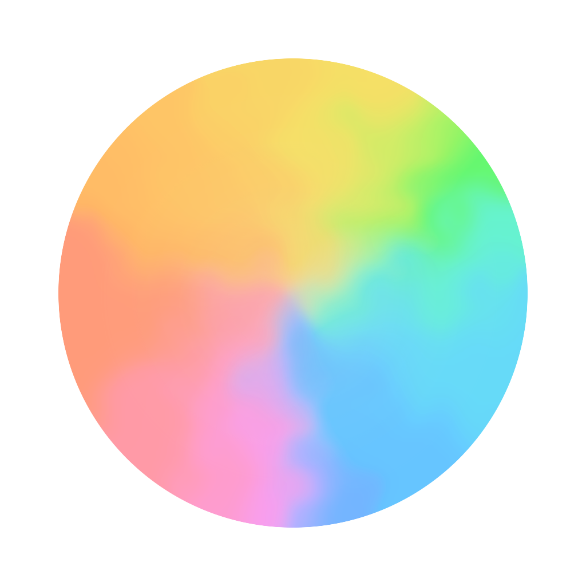

Walk Orb
歩いた一日が、色になる。
一日の歩きを色として残して、その日だけのオーブをつくるアプリです。 数字だけでは見えにくい一日のリズムを、色で振り返れます。
日々の暮らしに、少しだけ新しい見方を。
小さなiPhoneアプリをつくっています。

歩いた一日が、色になる。
一日の歩きを色として残して、その日だけのオーブをつくるアプリです。 数字だけでは見えにくい一日のリズムを、色で振り返れます。
Breakfast Orbitのアプリと活動をまとめるページをつくりました。